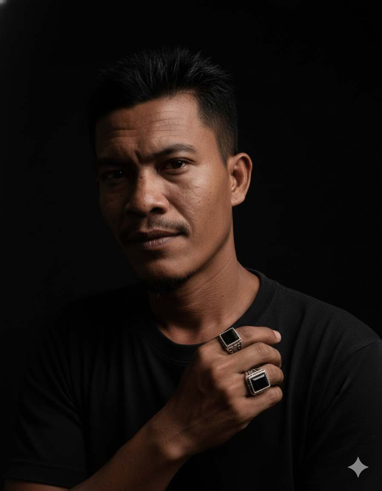

CHAPTER 01 · 1990
Where it began
Berawal dari Aceh. Sebuah perjalanan yang terus berkembang, dibentuk oleh pengalaman, nilai, dan keinginan untuk maju.
ROOTSBukan sekadar tentang siapa saya hari ini, tetapi tentang perjalanan, pelajaran, dan apa yang sedang saya bangun untuk masa depan.

Saya, Sudirman, tertarik pada teknologi, sistem digital, usaha mandiri, dan ide yang bisa diwujudkan menjadi sesuatu yang bermanfaat.
Website ini adalah ruang pribadi untuk menyimpan karya, mendokumentasikan perjalanan, dan membuka jalan menuju kemungkinan-kemungkinan baru.
Perjalanan hidup tidak selalu lurus. Setiap fase meninggalkan pengalaman yang membentuk langkah berikutnya.
Berawal dari Aceh. Sebuah perjalanan yang terus berkembang, dibentuk oleh pengalaman, nilai, dan keinginan untuk maju.
ROOTSMenekuni pekerjaan teknis di bidang kelistrikan, komputer, dan jaringan. Belajar menyelesaikan masalah dengan kemampuan dan pengalaman langsung.
TECHNOLOGYMembangun Sudirman.Net dan mempelajari dunia usaha: operasional, pelanggan, risiko, dan arti kemandirian.
ENTREPRENEURSHIPBeberapa arah yang ingin dikembangkan melalui teknologi, kreativitas, dan eksperimen yang berkelanjutan.
Arsip perjalanan usaha jaringan internet dan pelajaran yang didapatkan dari membangun layanan sendiri.
Eksplorasi asisten AI pribadi untuk membantu mengelola pengetahuan, ide, rencana, dan pekerjaan sehari-hari.
Membangun pusat dokumentasi digital untuk perjalanan, karya, pembelajaran, dan rencana masa depan.
Fokus saya adalah membangun fondasi baru: meningkatkan kemampuan, memperbaiki fondasi finansial, mengembangkan aset, dan menciptakan usaha yang lebih berkelanjutan.
Visi jangka panjangnya sederhana: hidup lebih mandiri, dekat dengan keluarga, terus belajar, dan memiliki kebebasan untuk memilih arah hidup.
Saya terbuka untuk pekerjaan jarak jauh, proyek freelance, dan kolaborasi teknis yang sesuai dengan pengalaman saya.
Troubleshooting jaringan, router, konektivitas internet, komputer, dan dukungan teknis dasar.
Pekerjaan teknis, pemeriksaan masalah, dan pemecahan masalah secara praktis sesuai lingkup keahlian.
Riset online, pengelolaan konten digital, eksperimen AI, dan otomasi sederhana yang terus saya kembangkan.
Punya kebutuhan atau ide proyek? Mari diskusikan ruang lingkup dan hasil yang diharapkan.
Untuk kolaborasi, peluang kerja, proyek teknologi, atau sekadar bertukar ide, silakan hubungi saya melalui kanal berikut.
Media sosial lainnya akan ditambahkan setelah tautan akun dikonfirmasi.
Satu langkah, satu karya, satu hari pada satu waktu.